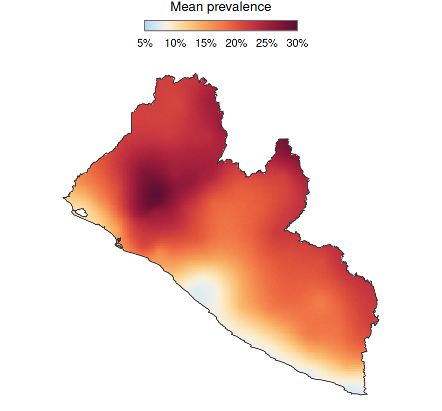

Model-based geostatistics in R. Fit spatial models to survey data, predict disease risk at locations and over areas, and quantify its uncertainty.

RiskMap implements generalised linear geostatistical models for Gaussian, binomial, Poisson and negative binomial outcomes, fitted by Monte Carlo maximum likelihood, or by exact maximum likelihood for Gaussian outcomes. It was developed for public health, for example to map the prevalence of a disease from surveys, and applies to any outcome measured at geo-referenced locations.
Installation
RiskMap 2.0 is not yet on CRAN, so install it from GitHub. It contains C++ code, which needs Rtools on Windows and the Xcode command line tools on macOS.
# install.packages("remotes")
remotes::install_github("claudiofronterre/RiskMap")install.packages("RiskMap") installs RiskMap 1.0.0 from CRAN, whose interface is different.
Get started
The liberia data give, for 90 villages, the number of people examined for the nodules of river blindness and the number found with them. This example fits a binomial geostatistical model to the counts and maps the predicted prevalence across Liberia.
library(RiskMap)
library(sf)
library(geobounds)
# Load the survey data as points
data(liberia)
liberia <- st_as_sf(liberia,
coords = c("long", "lat"),
crs = 4326)
# Choose a projection and project the data and the border
crs <- propose_crs(liberia)
liberia <- st_transform(liberia, crs)
border <- st_transform(gb_get_adm0("Liberia"), crs)
# Fit a binomial model with a spatial Gaussian process
fit <- glgpm(npos ~ gp(),
data = liberia,
family = "binomial",
denominator = ntest)
# Predict prevalence on a 2.5 km grid and map it
grid <- create_grid(border, spacing = 2.5)
prediction <- predict(fit, newdata = grid)
plot(prediction)
Predicted prevalence of nodules across Liberia. Boundary from geoBoundaries (UNMIL and OCHA ROWCA), CC BY 3.0 IGO.
What RiskMap does
Explore
Choose a projection that keeps distances accurate with propose_crs(), look for spatial correlation with variogram(), and build prediction grids and population weights with create_grid() and get_worldpop().
Fit
Write the model as a formula with a spatial Gaussian process, gp(), and random effects, re(), and fit it with glgpm(). check_computation() flags anything in the fit that needs attention.
Predict
Predict prevalence at new locations or over areas with predict(), with exceedance probabilities and averages weighted by population from get_worldpop().
Assess
Compare models by spatial cross-validation with assess_prediction(), and test prediction targets on simulated data with assess_simulation().
Learn with the book
Model-based geostatistics for global public health using R, by Emanuele Giorgi and Claudio Fronterre, teaches model-based geostatistics with RiskMap through analyses of real data from public health. It is free to read online.
RiskMap 2.0
RiskMap 2.0 is a redesign of version 1.0.0. Many functions have been renamed, merged or removed, and prediction at locations and over areas now goes through a single predict() method, so code written for 1.0.0 needs changing. The NEWS lists the main changes, with a table of the functions of 1.0.0 and their replacements.
Citation
To cite RiskMap, please use
Giorgi, E., Fronterre, C. and Smart, S. (2026). RiskMap: Geostatistical Modeling of Spatially Referenced Data. R package version 2.0.0. https://claudiofronterre.github.io/RiskMap/
citation("RiskMap") in R, or Citing RiskMap, gives the same reference with a BibTeX entry. Please report bugs and suggest features in the issue tracker.